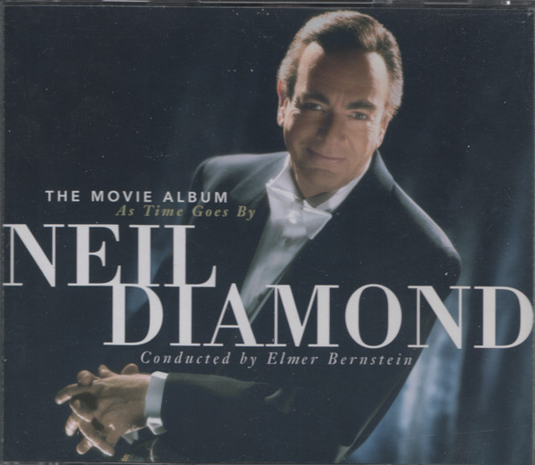

CD
The Movie Album As Time Goes By
Neil Diamond
Media: NM · Sleeve: NM
CA$8.00
Discogs SuggestedCA$9.94
Discogs MedianCA$9.94
Discogs HighCA$9.94
- Year
- 1998
- Label
- Columbia, Columbia, Columbia
- Catalog #
- C2K 69540, CK 69711, CK 69712
- Country
- CACanada
- Genre / Style
- Pop, Stage & Screen · Vocal